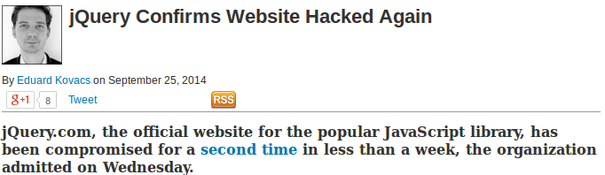

What is cross-site scripting?
Cross-site scripting is a type of computer security vulnerability.
XSS enables attackers to inject client-side scripts into Web pages viewed by
other users .
(Wikipedia)
A quick and dirty example
I'm going to show you a vulnerable application.
How would you try to execute JavaScript code inside it?
How do we protect ourselves against this?
First idea: substitute < and > for < and >
Nope.
<img src="something">
<img src="asdafs" onerror="evil_function() ">
How do we protect ourselves against this?
Second idea: also substitute " for "
Nope.
<img src="something">
<img src="javascript:evil_function(); ">
The bad guys have a
huge back of tricks!
Stored and reflected XSS
The previous attacks involved storing a mean piece of information in the server: that is called
stored XSS .
We can also craft a malicious URL, like<script>evil_function()</script> .reflected XSS .
How common is XSS?
A recent study with automated tools found out 1,602 unique vulnerabilities in the Alexa
Top 10k websites.
A consequence from Murphy's laws:
As an application grows in complexity, so does the chance
that someone will screw up.
How to destroy your reputation in 30 seconds
VIDEO
Countermeasures
What do you think is the most obvious way to protect ourselves against XSS?
Sanitize all inputs!
Particularly, escape HTML: &, <, >, ", ' and /.
Never put untrusted data inside:
<script> tags
a HTML comment
a HTML attribute name
a tag name
CSS
Countermeasures (2)
Use established security tools and frameworks (implementing sanitizing filters yourself is
NOT recommended!)
Content Security Policy
Subresource Integrity
Protection tools in web browsers (e.g., Chrome's XSS Auditor)
Just kidding, they don't really work. :-)
Content Security Policy
Wouldn't it be cool if we could specify a whitelist of domains from where JavaScript is
acceptable and forbid everything else?
Content-Security-Policy: script-src 'self' https://apis.google.com
Allows you to specify from which domains scripts, images, objects and such elements can
be loaded.
Forbids inline JavaScript and functions like eval() unless explicitly asked to.
It doesn't work on IE. Use X-Content-Security-Policy instead. :-)
Subresource Integrity
Let's change our point of view for a moment...
We've been talking about allowing to execute only the JavaScript we trust.
Can a JavaScript file from a trusted partner become malicious?

Subresource Integrity (2)
<script src="https://analytics-r-us.example.com/v1.0/include.js"
integrity="sha256-Rj/9XDU7F6pNSX8yBddiCIIS+XKDTtdq0//No0MH0AE="
crossorigin="anonymous"></script>
Main idea: specify a hash (or more) for each file we load.
Unsupported in most browsers yet, but it'll be there soon.
To sum up...
Cross-site scripting involves an attacker executing malicious code
A XSS vulnerability allows the attacker to control the whole website
How to avoid: sanitize, sanitize, sanitize!
There are some fancy new countermeasures like Content Security Policy and Subresource Integrity.
That's it!
Thanks for listening, have a cookie. :-)